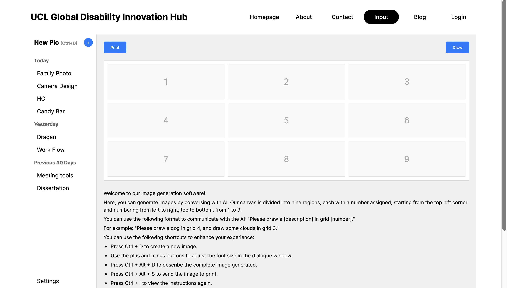
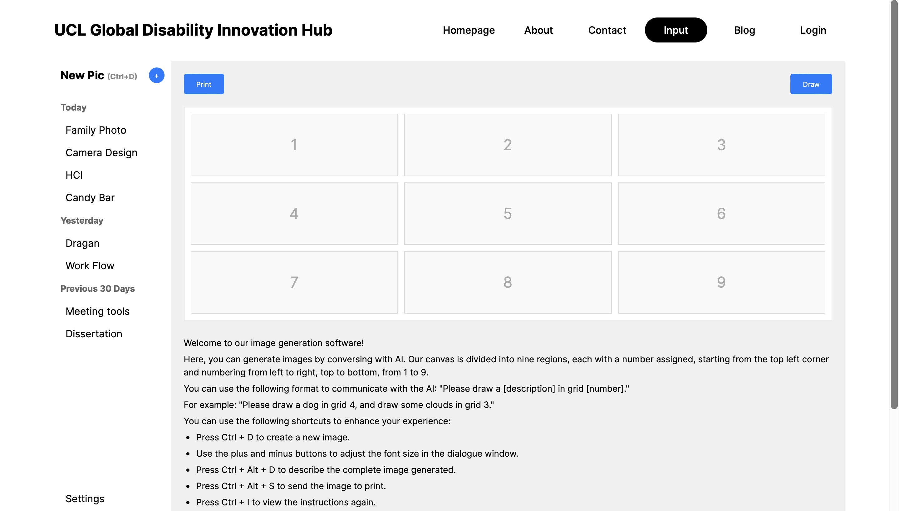

Based London, UK | UCL BEng Mechanical Engineering, 1:1, 2025 | Worked in software engineering, quantitative research & finance
Email: chandernoah@gmail.com · LinkedIn · GitHub
LANGUAGES: Python, C++, Java (OOP) / Scala (functional), Typescript/JavaScript, MATLAB (VS Code, Spyder, IntelliJ editors)
TECH: Python Pandas, NiceGUI, PyTorch, Scikit-Learn, Andrew Ng’s Machine Learning Specialisation, React/Next.js, SQL, Excel
SYSTEMS: Experience with Unix/Linux dev., distributed system design, and asynchronous API communication for network latency.
Amazon SDE Internship — Prime Video (return offer)

Highlighted in the above image shows my project, with realtime, debounced fetching of title cards for movies, tv shows, live sports and more. The old experience exclusively contained worded search suggestions which meant:
- showing results of things we didn't have
- requiring a full page reload to navigate to the selected content item
Summary
- Improved Prime Video's search experience for millions of customers with content card suggestions including artwork, movie metadata, titles, release years, live sports badges etc to be presented in real time alongside worded suggestions.
- Built a highly scalable, low latency solution involving parallel API calls with progressive loading, debouncing strategies, and eliminating head-of-line blocking through asynchronous title card rendering.
- Coordinated with UX Designers and Product to implement a responsive design compatible across the retail site amazon.com (US, DE, UK, JP), primevideo.com (rest of world), the MShop phone App, the PV Windows App and all viewports including mobile, tablet, desktop.
- Owned the customer experience improvements for smoothness and keyboard navigation after completing my project early.
I finished the project one month early and used the extra time to propose and fix a number of additional issues across the search experience, including:
- fixing infinite tab-cycling in the search dropdown
- resolving a bug where the suggestions dropdown would disappear upon clicking a suggestion (which removed the 'instant' feel from search)
Highlights: backend service design, performance tuning, and collaborating with cross-functional teams.
Construction Site Computer Vision Tool
This project involved developing computer vision models and tools for construction site monitoring, object detection, and safety compliance. This included data collection, annotation pipelines, model training (e.g. YOLO & Tesseract OCR), and a lightweight dashboard for visualization.


Development of Online, On-demand Digital Tools
During my 2023 spring internship at Digital McKinsey, I met a consultant who went on to build a startup which would act an as online marketplace for digital tools, and I did some work for him in my second year at university, building digital tools alongside other programmers and using open-source code, as well as developing the website itself.
Description
Developed front-end (using NiceGUI) & adapted back-end Python code to convert open-source code into web applications. Collaborated and shared code within a team of 4 software developers on GitHub, following a documented framework to create tools. Produced a range of digital tools such as a QR-code generator and a directory-to-html converter. Augmented understanding of public software systems and services such as ArcGIS and IndexNow.
Technologies used
- Python: object oriented programming for tool-building and Nicegui for frontend
- Next.js
- Usage tracking & authentication
Please note that I cannot share code of tools which are on the website since it is proprietary software owned by the startup Nix. The website is currently still up and can be visited here: Live Website
Comparing the Efficacy of 2 Machine Learning Stock Predictors
In my free time, I've completed Codecademy courses on data analysis with Pandas, analysing financial data with Python and Machine Learning with Python, as well as some stuff with C++, and hence wanted to put my skills to use.
Description
Developing a stock predictor using Python, comparing the efficacy of the scikit-learn library’s Random Forest Generator to the use of PyTorch for stock price forecasting using a Recurrent Neural Network: LSTM (Long Short-Term Memory). The LSTM beat the RFG across all error metrics, and trading $10,000 over 300+ days it outperformed by approximately 3.81%.
Executed quantitative and statistical methods such as rolling averages (time-series momentum) and threshold probabilities, evaluating output based on various error metrics as well as a trading simulator I built using C++.
Technologies used
- Python: Numpy, Pandas, Scikit-Learn, Pytorch
- C++
In the images below, some graphical outputs of the model are shown, which were generated by various files on the github repository: View Project. First, the two models are evaluated based on Mean Absolute Error, Root Mean Squared Error and R-Squared Value, and it can be seen that the LSTM model using Pytorch produces lower error than the Random Forest Generator using Scikit-Learn across all 3 metrics:
| Model | MAE | RMSE | R² |
|---|---|---|---|
| Random Forest | 0.496 | 0.704 | -0.990 |
| LSTM | 0.477 | 0.691 | -0.913 |
LSTM outperforms the Random Forest model on all metrics: it has a lower MAE and RMSE, and a less negative R² value. However, the negative R² values for both models suggest that there may be an issue with the model fitting to be improved.
The two 'Predictions vs Actual' graphs below display the output of the model: a 1 or 0. A 1 is if the market is predicted to go up the next day and a 0 if the market is predicted to go down, since directional prediction is generally more useful in this context than absolute prediction. The final graph shows cumulative success rate over time, and at the bottom we have the results of the C++ trading simulator I built where Simulation 1 is for the LSTM and Simulation 2 for the RFG. Again, the LSTM outperforms.


Website for a UCL Professor — Accessibility Project
In the summer of 2024, I interned for 1 month as a software engineer at UCL in the department Computer Science, building a skeleton website interface for a mechanical tool that will help visually-impaired users interpret images through a refreshable braille surface.
Description
Developing a website for the UCL Global Disability Innovation Hub to interface a device that produces a refreshable braille surface. Employed Next.js (JS/HTML/CSS) for website GUI, with open-source GitHub code and an OpenAI API for image conversion. Carried out live trials and testing with potential users and pitching to potential investors to iterate a Figma UX design for the website. Implemented a contact page, user authentication and live notifications, alongside worker threads to handle concurrent API requests.
Technologies used
- Next.js, React
- JS, HTML, CSS
- Page navigation, authentication, contact page etc.
I built the website pages, shown in the images below, during my internship and was offered an extension on my contract due to the work I produced but was unable to continue due to other commitments. View Project
 


Image generation & pixelation (excerpt)
I also developed this code which uses the OpenAI DALL·E 3 Model API to generate an image which subsequently goes through a pixelation process to produce an second image that can be interpreted by a mechanical device which projects a heating laser on a metal surface to raise specific nodes configured in such a way that a blind person can run their fingers over the surface to visualise the image.
from openai import OpenAI
import requests
from PIL import Image
from io import BytesIO
import cv2
import numpy as np
# Set your OpenAI API key here
api_key = '---------------------------------------------------------'
# Initialize the OpenAI client
client = OpenAI(api_key=api_key)
# Define the prompt for the image generation
prompt = 'a simple 2D cartoon image of a duck with a clear outline and no background'
# Generate the image using the OpenAI client
response = client.images.generate(
model="dall-e-3",
prompt=prompt,
size="1024x1024",
n=1,
quality="standard"
)
# Retrieve the generated image URL
image_url = response.data[0].url
print(f'Generated Image URL: {image_url}')
# Download the image from the URL
def download_image(url, save_path):
response = requests.get(url)
if response.status_code == 200:
image = Image.open(BytesIO(response.content))
image.save(save_path, 'PNG')
print(f"Image saved to {save_path}")
else:
print(f"Failed to retrieve image. HTTP Status code: {response.status_code}")
save_path = "duck.png" # Path to save the image
download_image(image_url, save_path)
# Pixelate the downloaded image
def pixelate_image_with_spacing(original_image, grid_size, spacing):
height, width = original_image.shape[:2]
rows, cols = grid_size, grid_size
row_size = height // rows
col_size = width // cols
new_height = rows * (row_size + spacing) - spacing
new_width = cols * (col_size + spacing) - spacing
pixelated_image = np.ones((new_height, new_width, 3), dtype=np.uint8) * 255
for i in range(rows):
for j in range(cols):
start_row = i * row_size
start_col = j * col_size
center_pixel_color = original_image[start_row + row_size // 2, start_col + col_size // 2]
center_pixel_color = 0 if center_pixel_color < 100 else 255
new_start_row = i * (row_size + spacing)
new_start_col = j * (col_size + spacing)
pixelated_image[new_start_row:new_start_row + row_size, new_start_col:new_start_col + col_size] = center_pixel_color
return pixelated_image
# Process the image: resize, convert to grayscale, pixelate
def process_image(input_path, output_path, origin_size=(1280, 1280), grid_size=64, spacing=8):
original_image = cv2.imread(input_path)
original_image = cv2.resize(original_image, origin_size)
original_image = cv2.cvtColor(original_image, cv2.COLOR_BGR2GRAY)
pixelated_image = pixelate_image_with_spacing(original_image, grid_size, spacing)
cv2.imwrite(output_path, pixelated_image)
# Input and output file paths
input_image = "duck.png"
output_image = "pixelart_with_spacing.png"
# Process the image and save the result
process_image(input_image, output_image, origin_size=(1280, 1280), grid_size=128, spacing=8)
print("Finished.")